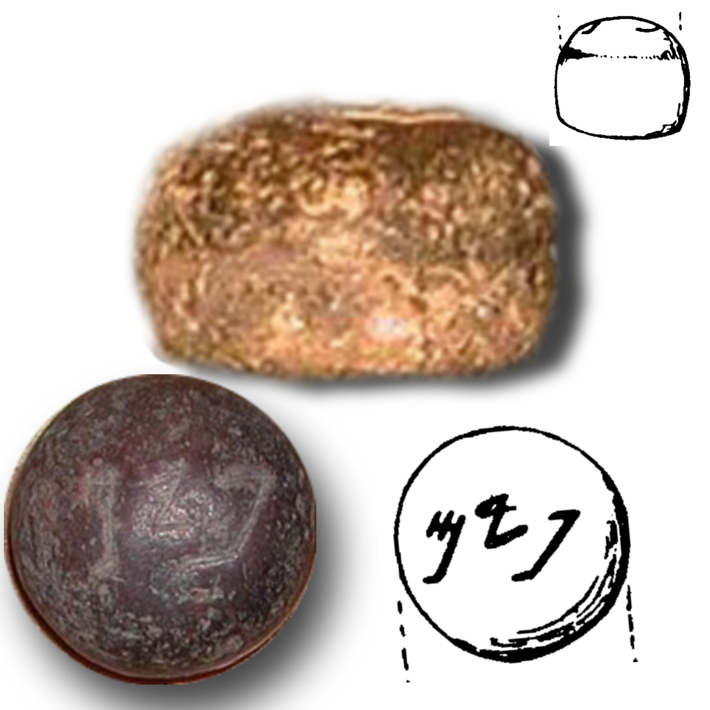

Ancient Israelite Pim Weight

- Find Name
- Ancient Israelite Pim Weight
- Description
- Polished dome-shaped stone weights about 15 mm in diameter and about 7.6-7.8 g, inscribed with the Paleo-Hebrew word pym, worth two-thirds of an Israelite shekel of about 11.3-11.5 g. The first examples were published from R.A.S. Macalister's excavations at Gezer (1902-1905 and 1907-1909, published 1912), including a 7.27 g weight from the summer 1907 season, and more have since been found at Gezer, Timnah, Ashdod and Ekron. The weights cluster in 9th-7th century BC strata. The word pym occurs only once in the Bible, in 1 Samuel 13:21, which the King James Version rendered as 'file'; the discovery of the weights showed it was a weight, and modern translations such as the NKJV (1982) correct it to 'pim'.
- Historical Period
- Iron Age II
- Evidence Class
- Contextual
- Interpretations
- The pim is a textbook case of archaeology clarifying a single obscure biblical word: the KJV translators, lacking the object, guessed 'file' for a word that appears nowhere else. The weights also show a standardised system of weighing silver and goods in Iron Age Judah and Philistia, since in this period there were no coins and payment was by weight.
- Alternative Names
- Pym Weight
- Related Books
- Scripture Illuminated
- Biblical Significance
- A single small stone solved a centuries-old translation puzzle in 1 Samuel 13:21, showing that the Philistines charged Israelites a pim to sharpen their tools.
- Artifact Date
- 9th-7th century BC
- Date Discovered
- 1907
- Discovery Location
- Gezer, Israel
- Timeline Era
- Divided Monarchy
Awaiting Review Not yet checked against scholarly sources. Treat its claims as provisional until this entry is reviewed. About verification
Last reviewed: not yet reviewed